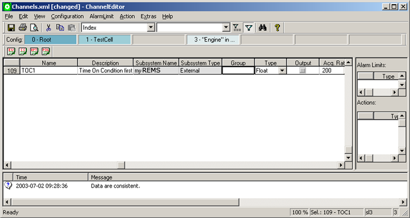

The Richmond Emission Measurement System (REMS) External Hook Application interfaces with the Richmond Emission System (RES) and gathers test information from physical samples. Using an Ethernet connection and the TCP/IP protocol it is possible for REMS to read from, and transmit to, the RES at a rate of 1Hz.
The REMS External Hook Application is started automatically by the REMS External Hook Subsystem. The connection between the REMS and the RES is transparent and is made when proDAS enters scan mode. Information is transferred in both directions and stops when proDAS exits scan mode. If the application stops abnormally, it is restarted again while proDAS is scanning.
REMS may not be configured for every customer.
The REMS External Hook Application consists of a main application and a library. These two modules and their relationship to other proDAS modules are shown in the diagram below:
The REMS External Hook Application queries the status of the RES and displays the information in the proDAS Unified Event Log (UEL). It is possible to get the status information from the RES regardless of the operating state.
In the case of RES specific errors, all other proDAS functions remain in operation. All RES errors are handled by the REMS External Hook Application and are reported to the user via the yellow pop-up warning box in the UEL and in a trace file. The list of potential errors includes:
In the case of communication failures, the REMS External Hook Application continuously attempts to re-establish communications with the RES.
To configure a REMS Channel:
Communication and computation by the RTE is directly related to the channel names defined for the subsystem and the channel names assigned to the REMS parameters in the RTE .config file.
The REMS program always utilises the following channels, that must be defined as REMS Subsystem channels:
Channel configuration information (e.g.: hardware connection, calculation, limits or actions) can be defined and manipulated through the Channel Editor or imported directly from either an XML file or a tab-delimited text file.
To import configuration information from an XML file, see Selecting the menu item File - Import in the Configuration Editors module. For detailed XML file structure information required to import a REMS channel, see XML File Structure.
To import configuration information from a tab-delimited file, see Extras -- Import TAB-delimited in the Channel Editor module. For detailed tab-delimited file structure information required to import a REMS channel, see Tab-Delimited File Structure.
An XML file structure is used to define the channels and subsystems.
The channel definitions are stored in the Channels.xml files in the configuration directories.
A REMS Channel contains generic information, described in Channel Editor - Generic Channel Parameters - XML File Structure. There are no subsystem specific columns.
The structure of a REMS Channel complies with the following example:
<Channels LastModificationDate="2008-04-16 09:50:43">
<Channel Name="AN01_CONCENTRATION" Description="Concentrator #1 - CO" Enabled="true" LastModificationDate="2008-04-16 09:50:43" SubsystemName="REMS" SubsystemType="External" AlternateName="" DataType="Float" InitialValue="-999999" Format="4.2f" UpdateRate="1" QualityCeiling="GOOD" Critical="true" EngineeringUnit="-" DisplayMin="0" DisplayMax="100" DeadBand="0" Output="false" ReferenceChannel="" Group="" SignalId="" />
</Channels>
The subsystem definitions are stored in the Subsystems.xml files in the configuration directories.
The structure of a REMS Subsystem is shown in the following example:
<Subsystems LastModificationDate="2008-04-16 09:58:50">
<Subsystem Name="REMS" Description="REMS External Hook SS" Enabled="true" LastModificationDate="2008-04-16 09:58:50" Id="0" Type="External" CreationDate="2008-02-22 14:11:51" Executable="" Recalculate="false" />
</Subsystems>
The REMS Subsystem is configured as an External Subsystem which contains generic information, described in Subsystem Editor - Generic Subsystem Parameters - XML File Structure. The specific attributes available to the external subsystem are not required to be defined.
| Column Name | XML Attribute Name | Tab-Delimited Attribute Name | Description | Type | Acceptable Values |
|---|---|---|---|---|---|
| Executable | Executable | n/a | Displays the complete path to an executable file. In the case of REMS, this value is stored in the .config file for the RTE. | String | A case sensitive string |
| Program Used for Recalculation | Recalculate | n/a | If the executable is used for recalculation, then this flag must be set. In the case of REMS it will be false. | Check Box |
The REMS Subsystem channel definition includes all generic channel definition columns. No subsystem specific configuration information is required.
To edit the REMS Subsystem, the Subsystem Editor must be selected from within the Configuration Administrator.
The tool bar in the Configuration Administrator allows the various configuration editors available for proDAS to be selected.
The Subsystem Editor allows new subsystems to be added to the current configuration.
To add a new subsystem:
Since this input is defined using a text box dialogue, the Subsystem menu item is greyed out and the text box is edited directly.
As REMS is not used for recalculation, the appropriate box must not be checked.
REMS is dependent upon specific information to function effectively. This information includes:
REMS may not be configured for every customer.
The REMS Subsystem requires a unique subsystem configuration. The channels in this configuration define how the External Hook driver communicates with the REMS External Hook program.
If any of the REMS required channels (see Channels Which Must Exist), or all of the channels specified in the engine specific configuration file don’t exist, the REMS program will report a UEL message and exit.
If REMS loses communication with the RES, it will set all input channels to bad value (-99999), and generate a UEL message. If any of the output channels go to bad value, REMS will stop sending the output data to the RES and report a UEL message.
The REMS Subsystem is configured by the RTE, along with all the other subsystems, as a request from the Management GUI. For legacy purposes, the configuration request can also be specified in the command line of the RTE.
A typical RTE initialisation file may include the following REMS Subsystem information:
| #-------------------------------------------------------------------------- # REMS Subsystem #-------------------------------------------------------------------------- |
|
| SS REMS | TRUE |
| CI serv_key | REMS_serv |
| CI connection | SOCKET |
| CI program | /users/RTE/bin/exe/rems -c /users/RTE/bin/exe/.config.rems -s |
| CI heartbeat | REMS_HEARTBEAT |
| CI error | REMS_ERROR |
Click here to see the RTE Initialisation file.
The REMS External Hook Application uses a configuration file located in the EXE directory of the RTE Host. The configuration file contains the following items:
The following is a sample configuration file:
#==========================================
# Module for REMS external subsystem
MD REMS
#-----------------------------------------------------------------------
# The RTE root path
CI root_path /users/RTE/
#-----------------------------------------------------------------------
# The file name of the REMS trace file
CI rems_trace_file Trace.rems
#-----------------------------------------------------------------------
# The verbosity level for REMS trace file
CI verbosity_level 100
#-----------------------------------------------------------------------
# The REMS PC hostname
CI rems_hostname res_pc
#-----------------------------------------------------------------------
# The RES TCP service port
CI rems_serv rems_ctrl
#-----------------------------------------------------------------------
# The REMS response timeout in milliseconds
CI rems_timeout 300
#-----------------------------------------------------------------------
# The UEL registration name (same as definedin .config UEL section)
CI uel_regname REMS
#============================================
<!> END OF CONFIG <!>
Separate engine-specific configuration files are used to store the channel mappings. These files are located in the /user/RTE/configuration/<engine_name>/REMS directory of the RTE and are named channels.map.
The Input Channel list and the Output Channel list define the mappings between RES variables and the channel names in the CVT. The format is:
CI input_channel CHANNEL_name
or
CI output_channel CHANNEL_name
| Field | Description |
|---|---|
| CI | Configuration Information. |
| output_channel | Keyword for an output channel. |
| input_channel | Keyword for an input channel. |
| CHANNEL_name | Defines the mapped channel name in the proDAS CVT. |
The following is a sample mapping file:
#==========================================
# Module for REMS external subsystem
MD REMS
#-----------------------------------------------------------------------
# The REMS Input Channel list
# Format: CI input_channel channel_name
# The channel_name is the input channel in the CVT
CI input_channel AN01_CONCENTRATION
CI input_channel AN02_CONCENTRATION
CI input_channel AN03_CONCENTRATION
CI input_channel AN04_CONCENTRATION
CI input_channel AN07_CONCENTRATION
CI input_channel AN08_CONCENTRATION
CI input_channel AN01SELECT
CI input_channel AN02SELECT
CI input_channel AN03SELECT
CI input_channel AN04SELECT
CI input_channel AN07SELECT
CI input_channel AN08SELECT
CI input_channel AN01OP
CI input_channel AN02OP
CI input_channel AN03OP
CI input_channel AN04OP
CI input_channel AN07OP
CI input_channel AN08OP
#-----------------------------------------------------------------------
# The REMS Output Channel list
# Format: CI output_channel channel_name
# The channel_name is the output channel in the CVT
CI output_channel BAROMETRIC_PRESSURE
CI output_channel AMBIENT_HUMIDITY
CI output_channel INLET_TEMPERATURE
CI output_channel FUEL_HYDROGEN_COUNT
CI output_channel FUEL_CARBON_COUNT
#============================================
<!> END OF CONFIG <!>
The order of the input channels must match the order of the channels defined by the MDS command in the AK Server Configuration file (AK.ServerMap.cfg) located on the RES.
The order of the output channels must match the order of the channels defined by the SDTS command in the AK Server Configuration file.
The following is a sample of the message definitions in the AKServerMap.cfg file:
**************************** AK SERVER CONFIGURATION FILE ****************************
********* *********************BENCH/ANALYZER COMMANDS *************************
*************** ********** Send EAS data to test cell host computer **********
$COMMAND MDS K0
$RESPONSE TEXT MDS
$RESPONSE GET BENCH_ERROR
$RESPONSE GET AN01_CONCENTRATION
$RESPONSE GET AN02_CONCENTRATION
$RESPONSE GET AN03_CONCENTRATION
$RESPONSE GET AN04_CONCENTRATION
$RESPONSE GET AN07_CONCENTRATION
$RESPONSE GET AN08_CONCENTRATION
$RESPONSE GET AN01SELECT
$RESPONSE GET AN02SELECT
$RESPONSE GET AN03SELECT
$RESPONSE GET AN04SELECT
$RESPONSE GET AN07SELECT
$RESPONSE GET AN08SELECT
$RESPONSE GET AN01OP
$RESPONSE GET AN02OP
$RESPONSE GET AN03OP
$RESPONSE GET AN04OP
$RESPONSE GET AN07OP
$RESPONSE GET AN08OP
********** Send test cell host data to EAS computer **********
$COMMAND SDTS K0
$RESPONSE TEXT SDTS
$RESPONSE GET BENCH_ERROR
$ACTION SET 2|BAROMETRIC_PRESSURE|EU
$ACTION SET 3|AMBIENT_HUMIDITY|EU
$ACTION SET 4|INLET_TEMPERATURE|EU
$ACTION SET 5|FUEL_HYDROGEN_COUNT|EU
$ACTION SET 6|FUEL_CARBON_COUNT|EU